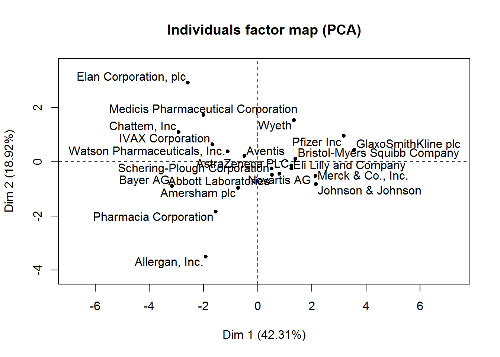
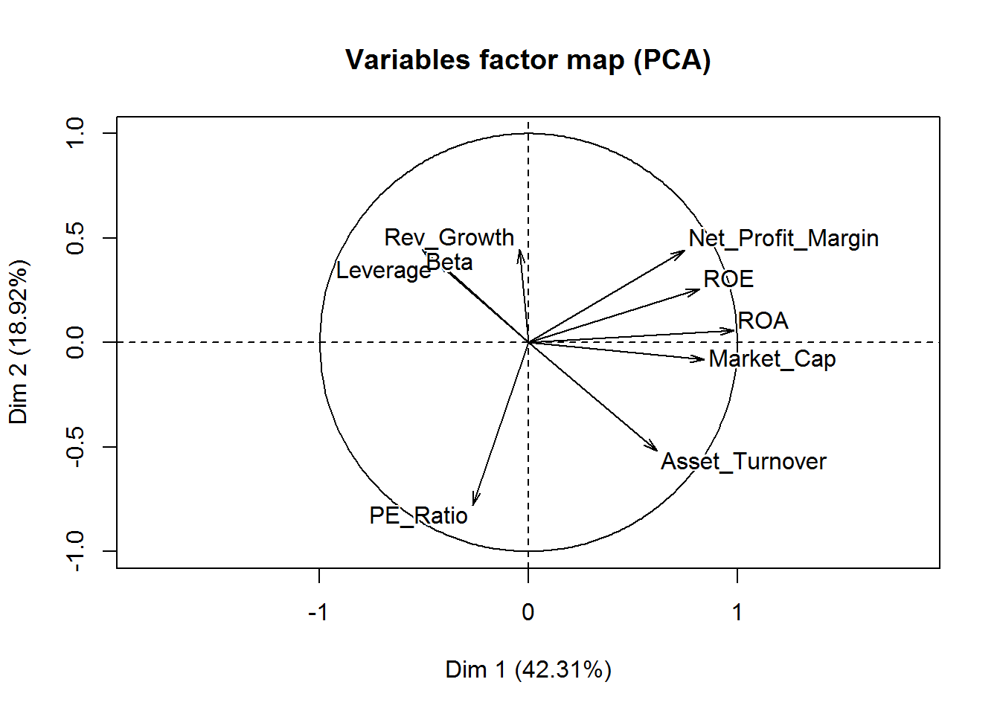
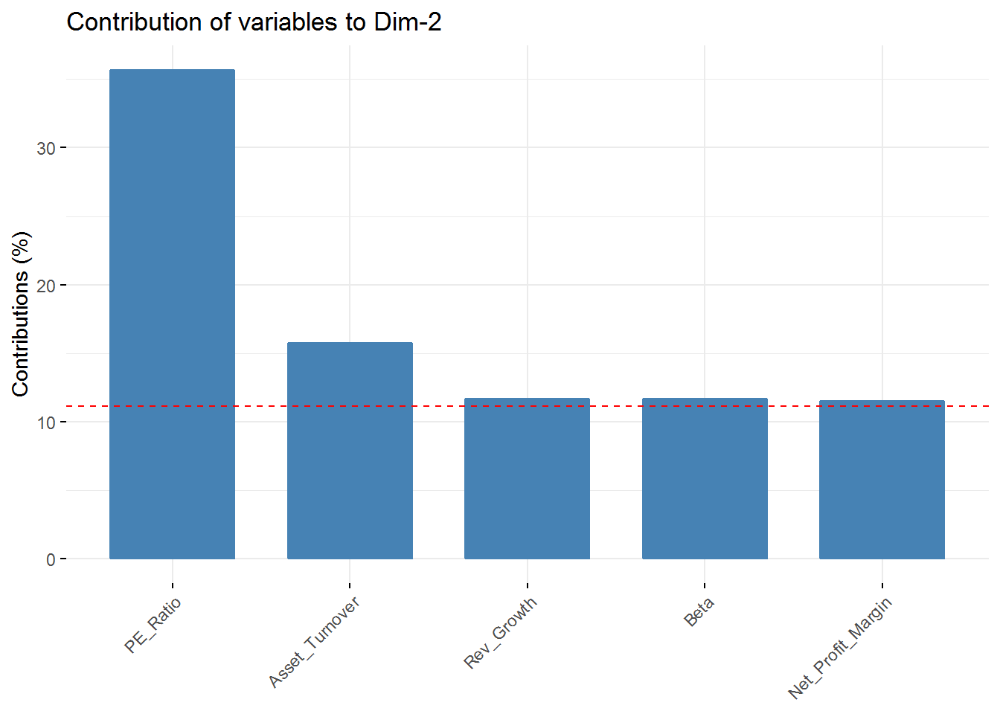

Clustering the Pharmaceutical Industry Stocks
In this post I will use two of the most popular clustering methods, hierarchical clustering and k-means clustering, to analyse a data frame related to the financial variables of some pharmaceutical companies. Clustering is an unsupervised learning technique where we segment the data and identify meaningful groups that have similar characteristics. In our case, the goal will be to find these groups within the pharmaceutical companies data. Like we did in the previous posts we will start by loading the required packages to our analysis.
Note: This data is not up-to-date and some of these companies are no longer active.
library(tidyverse) # group of packages to wrangle and visualize data
library(cluster) # cluster analysis
library(factoextra) # visualize clusters and principal components
library(dendextend) # visualize dendrograms
library(here) # create a file directory
library(ggrepel) # repel overlapping text labels
library(clustree) # visualize clusters
library(FactoMineR) # explore multivariate data
library(ggcorrplot) # visualize correlations
library(clValid) # compute cluster metrics
library(broom) # tidy algorithm outputs
library(umap) # dimension reduction
library(tidyquant) # in this case theme and color for clusters visualizationThe next step is to load our file and glimpse it.
# load the file
pharmaceuticals <- read_csv(here::here("pharmaceuticals.csv"))
# explore the data
glimpse(pharmaceuticals)## Observations: 21
## Variables: 14
## $ Symbol <chr> "ABT", "AGN", "AHM", "AZN", "AVE", "BAY"...
## $ Name <chr> "Abbott Laboratories", "Allergan, Inc.",...
## $ Market_Cap <dbl> 68.44, 7.58, 6.30, 67.63, 47.16, 16.90, ...
## $ Beta <dbl> 0.32, 0.41, 0.46, 0.52, 0.32, 1.11, 0.50...
## $ PE_Ratio <dbl> 24.7, 82.5, 20.7, 21.5, 20.1, 27.9, 13.9...
## $ ROE <dbl> 26.4, 12.9, 14.9, 27.4, 21.8, 3.9, 34.8,...
## $ ROA <dbl> 11.8, 5.5, 7.8, 15.4, 7.5, 1.4, 15.1, 4....
## $ Asset_Turnover <dbl> 0.7, 0.9, 0.9, 0.9, 0.6, 0.6, 0.9, 0.6, ...
## $ Leverage <dbl> 0.42, 0.60, 0.27, 0.00, 0.34, 0.00, 0.57...
## $ Rev_Growth <dbl> 7.54, 9.16, 7.05, 15.00, 26.81, -3.17, 2...
## $ Net_Profit_Margin <dbl> 16.1, 5.5, 11.2, 18.0, 12.9, 2.6, 20.6, ...
## $ Median_Recommendation <chr> "Moderate Buy", "Moderate Buy", "Strong ...
## $ Location <chr> "US", "CANADA", "UK", "UK", "FRANCE", "G...
## $ Exchange <chr> "NYSE", "NYSE", "NYSE", "NYSE", "NYSE", ...We have 14 variables related to the financial information of 21 pharmaceutical companies.
Data Exploration
Before we start with our clustering analysis, we should explore our data. First, we will check the correlations between our numeric variables.
Note: for this clustering analysis we will only use the numeric variables.
# create correlation matrix
pharmaceuticals_cor <- pharmaceuticals %>%
select_if(is.numeric) %>%
cor()
# visualize correlations
ggcorrplot(pharmaceuticals_cor,
outline.color = "grey50",
lab = TRUE,
hc.order = TRUE,
type = "full") 
We can identify strong positive correlations between Revenue on Assets, Revenue on Equity, Net Profit Margin, and Market Cap which might indicate that these variables form a cluster.
Another way to recognize the likely number of clusters before we do our clustering analysis is to use a Principal Component Analysis(PCA). Let’s use the PCA from the FactoMineR and the fviz_screeplot function from the factoextra package to check how much variance is explained by each dimension.
# use a data frame only with numeric values and scale the variables because they were measured in different scales
pharmaceuticals_tbl <- na.omit(pharmaceuticals) %>%
dplyr::select(-c(1, 12, 13, 14)) %>%
column_to_rownames(var = "Name") %>%
scale(.) %>% # standardize the values
as.data.frame() # convert to data frame## Warning: Setting row names on a tibble is deprecated.## use PCA to check how many dimensions we have
# PCA of our dataframe
new_pca <- PCA(pharmaceuticals_tbl)
# check eigenvalues and percentage of variance
new_pca$eig## eigenvalue percentage of variance cumulative percentage of variance
## comp 1 3.8080296 42.3114401 42.31144
## comp 2 1.7028349 18.9203881 61.23183
## comp 3 1.1435807 12.7064523 73.93828
## comp 4 0.8157384 9.0637604 83.00204
## comp 5 0.7071235 7.8569272 90.85897
## comp 6 0.4538979 5.0433098 95.90228
## comp 7 0.2337408 2.5971197 98.49940
## comp 8 0.1154565 1.2828502 99.78225
## comp 9 0.0195977 0.2177522 100.00000# visualization of how much variance each dimension explains
fviz_screeplot(new_pca, addlabels = TRUE)So, we have 4 Principal Components that capture more than 80% of the variance. The first Principal Component explains 42.3% and the second 18.92%. Regarding the eigenvalues, we have 3 components with eigenvalues above 1.
We can still check the contribution of the top 5 variables for the first 4 Principal Components using the fviz_contrib function from the factoextra package.
# get each variable PCA results
var <- get_pca_var(new_pca)
# each variable contribution to PC1 - top 5
fviz_contrib(new_pca, choice = "var", axes = 1, top = 5)# each variable contribution to PC2 - top 5
fviz_contrib(new_pca, choice = "var", axes = 2, top = 5)
# each variable contribution to PC3 - top 5
fviz_contrib(new_pca, choice = "var", axes = 3, top = 5)# each variable contribution to PC - top 5
fviz_contrib(new_pca, choice = "var", axes = 4, top = 5)In the first component Revenue on assets, Market Cap, Revenue on Equity, and Net Profit Margin are the variables with highest contribution. For the second component, Price/Earnings Ratio and Asset turnover are the highest contributors. In the third component Leverage and Revenue Growth have the highest contribution. Finally, in the fourth component the variables with the highest contribution are Revenue Growth and Beta.
Visualize the contribution of the variables for the first two components is possible through an axis.
# visualization of the first two components and the contributions of each variable
fviz_pca_var(new_pca, col.var="contrib",
gradient.cols = c("red", "green", "blue"),
repel = TRUE
) +
labs( title = "Variables - PCA")From this visualization, it’s clear that Revenue on assets, Revenue on equity, Net Profit Margin, Market Cap, and Asset Turnover tend to increase together and are the highest contributors to the first component.
Following the exploration of our data, let’s us start our clustering analysis.
Hierarchical Cluster Analysis
Hierarchical clustering is an approach to identify groups within a data frame where there is noneed to pre-specify the number of clusters intended to be extracted.
As we have already scaled our data including the removal of any missing values, we can start our clustering process. First, we should measure the similarity between our observations using an euclidean distance measure - other measures can be used such as the Manhattan distance. These distances can be visualized with the function fviz_dist from the factoextra.
# compute distance measure
dt <- dist(pharmaceuticals_tbl, method = "euclidean")
# visualize distance
fviz_dist(dt, gradient = list(low = "red", mid = "white", high = "blue"))Choosing a method of linkage is the next step. It can be: complete which considers the maximal distance between clusters, simple where is taken into account the smallest distance between clusters, average where the average distance between clusters is considered, and ward method where the pair of clusters with the lowest distance is merged. We can create a function with agnes function - it’s also an agglomerative hierarchical clustering method - to check which method gives higher agglomerative coefficient, that is, a greater clustering structure.
m <- c("average", "single", "complete", "ward")
names(m) <- c("average", "single", "complete", "ward")
#function to check the best (means higher value) linkage method
ac <- function(x) {
agnes(dt, method = x)$ac
}
map_dbl(m, ac)## average single complete ward
## 0.5600652 0.4600348 0.6990833 0.7943164Thus, the ward method give us a higher agglomerative coefficient. From now on, we will use this linkage method in our hierarchical clustering analysis.
# hierarchical clustering
set.seed(88)
hclust_1 <- hclust(dt, method = "ward.D2") # ward.D2 corresponds to the ward method in the hclust function
# plot hierarchical clustering
plot(hclust_1, cex = 0.6)Now, we should determine the optimal number of clusters - this process will also be used to determine the number of clusters in the following k-means algorithm. We will use two methods: elbow and average silhouette.
# elbow method
fviz_nbclust(pharmaceuticals_tbl, FUNcluster = hcut, method = "wss")# sillhouette method
fviz_nbclust(pharmaceuticals_tbl, FUNcluster = hcut, method = "silhouette")From these visualizations we should have two clusters. Let’s use the cutree function to cut our dendogram in 2 clusters.
# cutree function
cl_1 <- cutree(hclust_1, k = 2)
# table function check the number of pharmaceutical companies in each cluster
table(cl_1)## cl_1
## 1 2
## 11 10Consequently, 11 and 10 companies are displayed in cluster 1 and cluster 2 respectively.
More important, we can visualize how the pharmaceutical companies are distributed in each cluster.
plot(hclust_1, cex = 0.6)
rect.hclust(hclust_1, k = 2, border= 2:5)We can also visualize in a two-dimensional graph our two clusters.
# fviz_cluster function to visualize the clusters
fviz_cluster(list(data = pharmaceuticals_tbl, cluster = cl_1, repel = TRUE)) +
theme_minimal()Now that we have our clusters and recognize the pharmaceutical companies belonging to each one, we need to check the most relevant characteristics and describe each cluster better. However, we still need to understand what each cluster is really about. For this, we need to create a cluster variable in our cutree cluster dataframe generated before. Afterwards, we should aggregate our data by cluster and verify the mean of each variable.
# create cluster variable
pharmaceuticals_tbl$cluster <- cl_1
# aggregate by cluster our variables
pharmaceuticals_tbl %>%
group_by(cluster) %>%
summarise_all(mean)## # A tibble: 2 x 10
## cluster Market_Cap Beta PE_Ratio ROE ROA Asset_Turnover Leverage
## <int> <dbl> <dbl> <dbl> <dbl> <dbl> <dbl> <dbl>
## 1 1 0.673 -0.359 -0.276 0.657 0.834 0.461 -0.333
## 2 2 -0.741 0.395 0.304 -0.722 -0.918 -0.507 0.366
## # ... with 2 more variables: Rev_Growth <dbl>, Net_Profit_Margin <dbl>Cluster 1 is characterized by pharmaceutical companies that are more profitable, have a higher market value, and are more efficient. While cluster 2 has companies that borrow more money (higher leverage), show more volatility(higher beta), but where the revenues increased more, but not the profits.
In a few words, cluster 1 can be described as profitable and low-risk investment type of pharmaceutical companies. Cluster 2 as non-profitable and high-risk investment.
K-Means Cluster Analysis
Now, we will start with the K-means clustering. In this type of clustering method, we have to determine the number of clusters before we do our analysis. Because of that, we could use the elbow and silhouette method.
Note Other methods to determine the optimal number of clusters will be used later.
# use a data frame only with numeric values and scale the variables because they were measured in different scales
pharmaceuticals_tbl <- na.omit(pharmaceuticals) %>%
dplyr::select(-c(1, 12, 13, 14)) %>%
column_to_rownames(var = "Name") %>%
scale(.) %>% # standardize the values
as.data.frame() # convert to data frame## Warning: Setting row names on a tibble is deprecated.# elbow method
fviz_nbclust(pharmaceuticals_tbl, FUNcluster = kmeans, method = "wss")# sillhouette method
fviz_nbclust(pharmaceuticals_tbl, FUNcluster = kmeans, method = "silhouette")From the elbow method we could choose 2, 3, or maybe 4 clusters. However, the silhouette method indicates that 2 clusters correspond to the optimal number.
Now, we can build our K-means cluster with two clusters.
set.seed(88)
k_cluster2 <- kmeans(pharmaceuticals_tbl, centers = 2, nstart = 50,
iter.max = 10) # k equals 2 clusters
table(k_cluster2$cluster)##
## 1 2
## 10 11As we have seen in the hierarchical clustering, we have 10 pharmaceutical in one cluster and 11 in the other one. Regardless, we could check some metrics of compactness and separation with the function glance from the broom package and with the dunn function.
# check total within and between sum of squares
glance(k_cluster2)## # A tibble: 1 x 4
## totss tot.withinss betweenss iter
## <dbl> <dbl> <dbl> <int>
## 1 180 119. 61.4 1# dunn index
dunn_k2 <- dunn(clusters = k_cluster2$cluster, Data = pharmaceuticals_tbl)
dunn_k2## [1] 0.2546142We have a total within sum of squares (WSS) of 118.57 and between sum of squares (BSS) of 66.67. The WSS is a measure of compactness where a lower value is better, whereas BSS measures separation whose high value reflects a better outcome. The dunn index is 0.30. A higher value is considerably superior as the clusters are better separated and/ or more compact.
We can now try to see if with 3 clusters our performance metrics will be better. If so, we will segment our pharmaceutical with K equals 3. First, we will build or K-means cluster.
set.seed(88)
k_cluster3 <- kmeans(pharmaceuticals_tbl, centers = 3, nstart = 50,
iter.max = 10) # centers equals 3 clusters
table(k_cluster3$cluster)##
## 1 2 3
## 6 4 11The table of this k-means clustering shows 6 pharmaceutical companies in cluster 1, 4 in cluster 2, and 11 in cluster 3.
Now with the functions glance and dunn we will take a look at the performance metrics.
# check wSS and BSS
glance(k_cluster3)## # A tibble: 1 x 4
## totss tot.withinss betweenss iter
## <dbl> <dbl> <dbl> <int>
## 1 180 96.0 84.0 3tidy(k_cluster3)## # A tibble: 3 x 12
## x1 x2 x3 x4 x5 x6 x7 x8 x9 size
## * <dbl> <dbl> <dbl> <dbl> <dbl> <dbl> <dbl> <dbl> <dbl> <int>
## 1 -0.826 0.478 -0.370 -0.563 -0.851 -0.999 0.850 0.916 -0.332 6
## 2 -0.613 0.270 1.31 -0.961 -1.02 0.231 -0.359 -0.576 -1.38 4
## 3 0.673 -0.359 -0.276 0.657 0.834 0.461 -0.333 -0.290 0.682 11
## # ... with 2 more variables: withinss <dbl>, cluster <fct># check dunn index
dunn_k3 <- dunn(clusters = k_cluster3$cluster, Data = pharmaceuticals_tbl)
dunn_k3## [1] 0.3076927The WSS shows a lower value and the BSS a higher value compared with the K-means clustering with 2 clusters. The dunn index also has a higher value which means that with K equals 3 the clusters are more separated and have more compactness. In sum, the performance metrics of our k-means algorithm seem to be better with 3 clusters than with 2.
Moving on in our analysis, now we will use a different approach from the one described above where we used the fviz_cluster function to map our clusters in 2D format. In this case, we will use the UMAP (Uniform Manifold Approximation and Projection) algorithm, which is a dimension reduction algorithm similar to PCA. The UMAP algorithm reduces the variables in a data frame with two columns/dimensions corresponding to x and y coordinates. These two dimensions will capture the variability of our data in a two-dimensional set. So, it becomes possible to project in a two-dimensional graph the position of each pharmaceutical companies in each cluster.
Firstly, we will use the use the function umap in our data frame. The following step will be extracting the variable layout from the UMAP object to create a data frame with the coordinates of the respective pharmaceutical companies.
# umap our data frame
umap_pharma <- pharmaceuticals_tbl %>%
umap()
# create umap dataframe
umap_obj <- umap_pharma$layout %>%
as.data.frame() %>%
rownames_to_column(var = "Pharma")
umap_obj## Pharma V1 V2
## 1 Abbott Laboratories -0.5599971 0.46196012
## 2 Allergan, Inc. 0.9289384 1.43291560
## 3 Amersham plc 0.3354541 0.34965708
## 4 AstraZeneca PLC -0.5293549 -0.56448968
## 5 Aventis 1.5377670 -0.09310394
## 6 Bayer AG 0.9640006 0.72732919
## 7 Bristol-Myers Squibb Company -1.1071940 -0.01250234
## 8 Chattem, Inc 0.5180765 1.05588066
## 9 Elan Corporation, plc 0.9458157 -0.47147116
## 10 Eli Lilly and Company -1.1430508 0.76003736
## 11 GlaxoSmithKline plc -1.4867707 -1.15857252
## 12 IVAX Corporation 0.8873017 0.18199628
## 13 Johnson & Johnson -1.1974953 -0.74347125
## 14 Medicis Pharmaceutical Corporation 1.2166261 -0.93939240
## 15 Merck & Co., Inc. -0.7444749 -1.11176241
## 16 Novartis AG -0.7579310 1.06683888
## 17 Pfizer Inc -1.4173004 -1.53152437
## 18 Pharmacia Corporation 1.6203149 0.77533872
## 19 Schering-Plough Corporation -0.1964202 0.04833752
## 20 Watson Pharmaceuticals, Inc. 1.8203646 -0.47752432
## 21 Wyeth -1.6346701 0.24352297We can also visualize the position of each pharmaceutical company in this UMAP 2D projection.
# visualize umap dataframe
umap_obj %>%
ggplot(aes(V1, V2)) +
geom_point() +
geom_label_repel(aes(label = Pharma))Yet our goal is to map these pharmaceutical companies with the respective cluster assignment. We will use augment from the broom package to assign each cluster to our respective pharmaceutical company. Right after , we will join the K-means data frame with the umap object.
# use augment to assign the clusters to our pharmaceutical companies
kmeans_tbl <- augment(k_cluster3, pharmaceuticals_tbl) %>%
dplyr::select(pharma = .rownames, .cluster)
# join the kmeans data frame with the umap object
kmeans_umap <- kmeans_tbl %>%
left_join(umap_obj, by = c("pharma" = "Pharma"))
kmeans_umap## # A tibble: 21 x 4
## pharma .cluster V1 V2
## <chr> <fct> <dbl> <dbl>
## 1 Abbott Laboratories 3 -0.560 0.462
## 2 Allergan, Inc. 2 0.929 1.43
## 3 Amersham plc 2 0.335 0.350
## 4 AstraZeneca PLC 3 -0.529 -0.564
## 5 Aventis 1 1.54 -0.0931
## 6 Bayer AG 2 0.964 0.727
## 7 Bristol-Myers Squibb Company 3 -1.11 -0.0125
## 8 Chattem, Inc 1 0.518 1.06
## 9 Elan Corporation, plc 1 0.946 -0.471
## 10 Eli Lilly and Company 3 -1.14 0.760
## # ... with 11 more rowsNow, we can visualize the clusters in a 2D projection.
kmeans_umap %>%
mutate(label_pharma = str_glue("Company: {pharma}
Cluster:{.cluster}")) %>%
ggplot(aes(V1, V2, color = .cluster)) +
geom_point() +
geom_label_repel(aes(label = label_pharma), size = 2.5) +
guides(color = FALSE) +
theme_minimal() +
scale_color_tq() +
labs(title = "Pharmaceutical Companies Segmentation",
subtitle = "K-Means Cluster Algorithm with UMAP Projection")As we did in the hierarchical clustering analysis, we need to check which are the characteristics associated with each cluster. So, we still need to find the real meaning of these clusters. We will use again the augment function to create a data frame of our K-means algorithm and find out how the variables profile in each cluster.
k_cluster3 %>%
augment(pharmaceuticals_tbl) %>%
dplyr::select(-.rownames) %>%
group_by(.cluster) %>%
summarise_all(mean)## # A tibble: 3 x 10
## .cluster Market_Cap Beta PE_Ratio ROE ROA Asset_Turnover Leverage
## <fct> <dbl> <dbl> <dbl> <dbl> <dbl> <dbl> <dbl>
## 1 1 -0.826 0.478 -0.370 -0.563 -0.851 -0.999 0.850
## 2 2 -0.613 0.270 1.31 -0.961 -1.02 0.231 -0.359
## 3 3 0.673 -0.359 -0.276 0.657 0.834 0.461 -0.333
## # ... with 2 more variables: Rev_Growth <dbl>, Net_Profit_Margin <dbl>Cluster 3 shows a similar pattern as Cluster 1 from the Hierarchical Clustering algorithm. It is comprised of high profitable companies representing a low risk investment. Cluster 2 is composed of non-profit companies and overpriced stocks showing a high volatility (high Beta).Additionally, these companies do not seem to borrow a lot of money (low Leverage). Cluster 1 includes non-profit and high volatility companies as the companies in Cluster 2, and even considering revenue growth and high levels of borrowings, their stocks look underpriced.
Let’s create a tibble with the tribble function with the cluster number and the respective characteristics.
# create tibble withthe characteristics of the 3 cluster
cluster_tibble <- tibble::tribble(~.cluster, ~cluster.label,
1, "Non Profitable/High Risk Investment/Underpriced Stocks",
2, "Non Profitable/High Risk Investment/Overpriced Stocks",
3, "Profitable/Low Risk Investment")
# make .cluster variable a factor
cluster_tibble <- cluster_tibble %>%
mutate(.cluster = as.factor(as.character(.cluster)))Now, we can visualize the clusters with respective description of such characteristics.
# clusters visualization
kmeans_umap %>%
left_join(cluster_tibble) %>%
mutate(label_pharma = str_glue("Company: {pharma}
Cluster:{.cluster}
{cluster.label}")) %>%
ggplot(aes(V1, V2, color = .cluster)) +
geom_point() +
geom_label_repel(aes(label = label_pharma), size = 2) +
guides(color = FALSE) +
theme_tq() +
scale_color_tq() +
labs(title = "Pharmaceutical Companies Segmentation",
subtitle = "UMAP 2D Projection with the K-Means Cluster Algorithm")## Joining, by = ".cluster"Conclusion
Hope you have enjoyed this introduction to clustering analysis. Despite the plethora of cluster algorithms, the goal was to show the power of this unsupervised algorithm to segment any kind of business. Talk to you through the following posts. In the meantime keep coding!